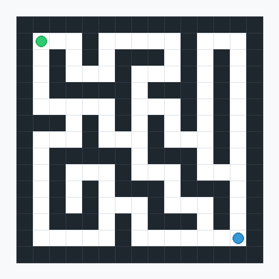
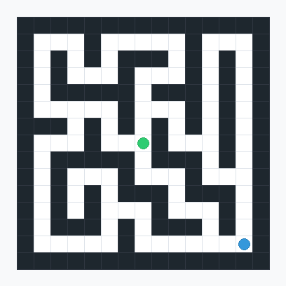
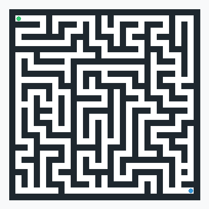

Depth-First Search (DFS) navigates a maze by following a single branch as deeply as possible before backtracking when encountering a dead end. While DFS is memory-efficient because it only needs to keep track of the current path, it does not guarantee the shortest path to the goal.

Every step in DFS goes:
Middle-Start Maze:

2× Dense Grid Maze:
